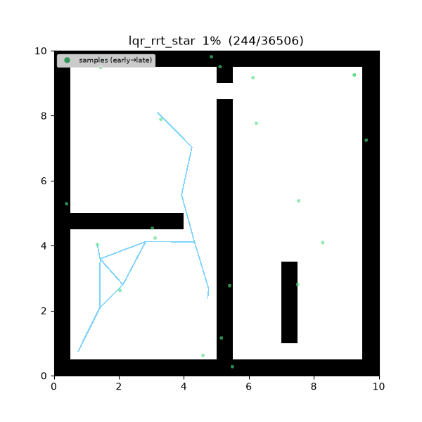
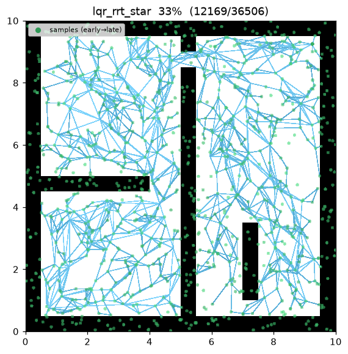
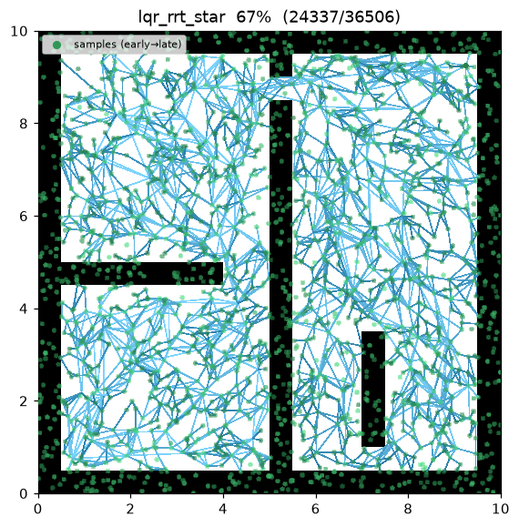
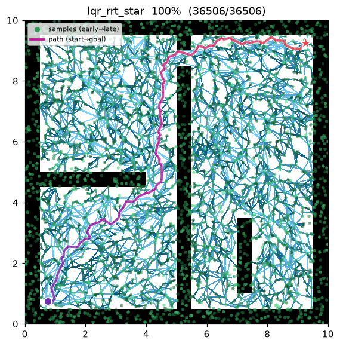
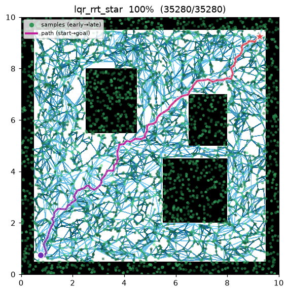

LQR-RRT*¶
| Item | Description |
|---|---|
| Category | sampling-based, single-query, anytime, kinodynamic |
| Required capability | SamplingSpace |
| Completeness | probabilistically complete |
| Optimality | asymptotically optimal in the LQR cost (Perez et al. 2012) |
| Complexity | dominated by an LQR feedback roll (integration) per near-neighbor per iteration; the metric/gain solve the Riccati equation once and are reused |
| Original paper | Perez, Platt, Konidaris, Kaelbling & Lozano-Pérez (2012) 1 |
Background¶
Applying RRT to a system with dynamics needs two extension heuristics: a distance metric between two states and a steering function that reaches from one state toward another. Geometric RRT gets both for free (Euclidean distance, straight lines), but with dynamics both are hard to design by hand. Kinodynamic RRT*2 obtains them by solving a fixed-final-state OBVP exactly (2013), but that closed form must be derived per system.
Perez et al.1 instead derive both automatically from an LQR (Linear-Quadratic Regulator). Linearise the dynamics and pick a quadratic cost \(J=\int(x^\top Q x + u^\top R u)\,dt\); the LQR solution then supplies
- the distance metric \(\mathrm{dist}(a,b)=(a-b)^\top S\,(a-b)\), where \(S\) is the Riccati cost-to-go matrix, and
- steering — the LQR feedback policy \(u=-K(x-x_\text{ref})\), with \(K=(R+B^\top P B)^{-1}B^\top P A\), integrated forward.
No bespoke metric/steer is needed. It sits between geometric RRT (2011, straight edges / Euclidean metric) and Kinodynamic RRT (2013, exact OBVP): the LQR gives a cheap, general feedback extension at the price of being asymptotic rather than an exact two-point solve.
This implementation owns the same 2D double integrator as this repo's Kinodynamic
RRT* — state \((x, y, v_x, v_y)\), control = acceleration — so the two compare on one
benchmark. It depends only on the SamplingSpace capability: the map answers
is_motion_valid on the \((x, y)\) projection and knows nothing of velocity.
How It Works¶
maze01 — tree edges are LQR feedback trajectories (curved). Nodes are rest states,
so each edge is a feasible smooth accelerate/decelerate trajectory from a parent to a
child rest state; rewiring straightens the incumbent in LQR-cost space.

Intermediate search progress (left → right: early / middle / final path):
 |
 |
 |
Final result on open01:

LQR_RRT_STAR(start, goal):
S, K ← SOLVE_RICCATI(A, B, Q, R) # DARE once — derives metric/gain
x_start ← (start, v=0); x_goal ← (goal, v=0) # lifted to rest states
T ← {x_start}
for i in 1..max_iterations: # anytime — runs the full budget
x_rand ← (goal rest-state w.p. goal_bias) else (sample position, random velocity)
x_near ← argmin_{x∈T} (x−x_rand)ᵀ S (x−x_rand) # LQR metric
x_new ← rest waypoint step_size toward x_rand from x_near
(edge, c) ← LQR_STEER(x_near, x_new) # integrate u=−K(x−x_new), collision-check
if edge = ∅: continue
N ← near(T, x_new, neighbor_radius)
parent ← argmin_{x∈N∪{x_near}} cost(x) + LQR_STEER(x, x_new).cost # choose-parent
T.add(x_new, parent)
for x ∈ N: # rewire
if cost(x_new) + LQR_STEER(x_new, x).cost < cost(x): x.parent ← x_new
if ‖x_new − goal‖ ≤ goal_tolerance:
best ← min(best, path through x_new to x_goal)
return best
LQR_STEER(a,b) integrates the feedback policy \(u=-K(x-b)\) (clamped) from \(a\) toward
the rest target \(b\), yielding the trajectory and its realised LQR cost
\(\sum(x^\top Q x + u^\top R u)\,dt\). Every trajectory is collision-checked by sampling
waypoints and calling is_motion_valid (the same validation geometric RRT* applies to
a straight edge).
Measurements (Python, seed = 1, 4000 iterations, trace on):
| map | path cost (LQR) | tree size | runtime |
|---|---|---|---|
| maze01 | 4.643 | 2,904 | ~1.9 s |
| open01 | 4.269 | 2,775 | ~1.8 s |
The cost scale differs from Kinodynamic RRT* by design — the LQR stage cost \(\int x^\top Q x + u^\top R u\) is a different functional than Webb's \(\int 1+u^\top R u\). The C++ implementation is the identical algorithm; its random stream differs from Python so the exact cost differs slightly, as with the other planners.
Reproduce:
python python/demos/demo_lqr_rrt_star.py \
--map maps/grid/maze01.yaml --scenario maps/scenarios/maze01_s1.yaml \
--params configs/global_planning/lqr_rrt_star.yaml --trace out/lqr.jsonl
python tools/viz/replay.py out/lqr.jsonl --gif out/lqr.gif
Automatically Derived Extension Heuristics — the LQR¶
System. With position \(p\in\mathbb{R}^2\) and velocity \(v\in\mathbb{R}^2\), state \(x=(p,v)\), the double integrator decouples per axis:
Riccati. The infinite-horizon LQR cost-to-go matrix \(S\) satisfies the algebraic Riccati equation. In continuous time,
with optimal gain \(K=R^{-1}B^\top S\). The implementation discretises over \(dt\) (\(A_d=[[1,dt],[0,1]]\), \(B_d=[[dt^2/2],[dt]]\)) and takes the fixed point of the discrete Riccati recursion (DARE):
The double integrator is controllable and \(Q\succ0\), so the iteration from \(P_0=Q\) converges to the unique stabilising solution. Because the system is LTI and \(Q\) is block-diagonal, \(S\) and \(K\) are state-independent — identical per axis and across iterations — so they are solved once at planner start. (The decisive difference from Kinodynamic RRT*: it has no Riccati solve — it roots a quartic for an exact optimal arrival time per candidate edge. Here the metric/steer come from \(S,K\).)
With defaults \(q_\text{pos}=q_\text{vel}=r_\text{ctrl}=1\), \(dt=0.2\): \(S\approx\begin{bmatrix}9.19 & 5.02\\ 5.02 & 9.23\end{bmatrix}\), \(K\approx[0.841,\ 1.546]\).
Distance metric. Summed over the two axes,
Zero iff \(a=b\), else positive. Since samples carry a velocity, nearest-neighbour selection reflects velocity direction as well as position (direction-aware, unlike Euclidean). Changing \(Q/R\) changes \(S\), hence the cost of the same maneuver.
Steering. The feedback policy \(u=-K(x-x_\text{ref})\) is integrated with step \(dt\)
(inputs clamped to \(|u|\le u_\text{max}\)). Lifting nodes to rest states makes rest
an equilibrium of the double integrator, so the closed loop \(A-BK\) is Hurwitz — it
regulates onto the target with no steady-state offset. Every stored edge is therefore a
real, collision-free, dynamically-feasible trajectory that reaches its child, which
keeps the RRT* rewiring exact. Samples still carry a random velocity so the nearest
metric is full-state, while the extension steers to a rest waypoint at most step_size
away toward the sample.
Properties¶
- Completeness: probabilistically complete1.
- Optimality: asymptotically optimal in the LQR cost where the linearisation is locally valid — the incumbent converges to the minimum-LQR-cost trajectory1.
- Difference from Kinodynamic RRT: the extension is an LQR feedback rather than an exact two-point OBVP — cheap (one Riccati solve + an integration per candidate) and general, but asymptotic. This implementation lifts nodes to rest states to make regulation reach exactly (rest→rest), at the price that the path comes to rest at each waypoint — a sequence of smooth accelerate/decelerate arcs, in contrast to Kinodynamic RRT carrying momentum through waypoints.
- Practical notes: a fixed
neighbor_radius(position prefilter) with the near/nearest candidate set capped for tractability (a k-nearest RRT* variant, Karaman & Frazzoli 2011); the selection among candidates still uses the exact LQR cost.
Parameters¶
| Name | Type | Default | Range | Description |
|---|---|---|---|---|
max_iterations |
int | 4000 | [1, 200000] | Iteration budget (anytime — current best returned when exhausted) |
step_size |
float | 1.5 | [0.01, 100.0] | Extension cap \(\eta\) (m): distance to the rest waypoint toward the sample |
goal_bias |
float | 0.1 | [0.0, 1.0] | Probability of sampling the goal rest-state directly |
goal_tolerance |
float | 1.0 | [0.0, 100.0] | Position radius within which a goal connection is attempted (m) |
neighbor_radius |
float | 2.0 | [0.01, 100.0] | Choose-parent / rewire position neighborhood radius (m) |
q_pos |
float | 1.0 | [0.001, 1000.0] | LQR position state weight \(q_\text{pos}\) (\(Q=\mathrm{diag}(q_\text{pos},q_\text{vel})\)) |
q_vel |
float | 1.0 | [0.001, 1000.0] | LQR velocity state weight \(q_\text{vel}\) |
r_ctrl |
float | 1.0 | [0.001, 1000.0] | LQR control weight \(r\) (\(R=r\,I\)) |
lqr_dt |
float | 0.2 | [0.01, 10.0] | LQR discretisation / integration step (s) |
control_limit |
float | 10.0 | [0.01, 1000.0] | Per-axis control input clamp $ |
max_velocity |
float | 1.5 | [0.01, 100.0] | Sampled velocity range for the nearest metric \([-v_{\max}, v_{\max}]\) (m/s) |
seed |
int | 1 | [0, 2^31−1] | Random seed (reproducibility) |
Emitted Trace Events¶
planning_started → (sample_drawn, candidate_evaluated, edge_added, rewire) → path_found* → planning_finished
path_found can be emitted multiple times (each time the incumbent improves). Edges are
emitted as a chain of chords along each LQR feedback trajectory, so the viz renders the
curve.
References¶
-
Perez, A., Platt, R., Konidaris, G., Kaelbling, L., & Lozano-Pérez, T. (2012). "LQR-RRT*: Optimal Sampling-Based Motion Planning with Automatically Derived Extension Heuristics." IEEE International Conference on Robotics and Automation (ICRA), 2537–2542. doi:10.1109/ICRA.2012.6225177 · PDF ↩↩↩↩
-
Webb, D. J., & van den Berg, J. (2013). "Kinodynamic RRT*: Asymptotically Optimal Motion Planning for Robots with Linear Dynamics." IEEE International Conference on Robotics and Automation (ICRA), 5054–5061. doi:10.1109/ICRA.2013.6631299 · PDF (arXiv) ↩